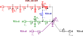

Disassembled thermal circuits from building description#

This notebook presents how to obtain disassambled thermal circuits from a folder describing the building implemented in the function bldg2TCd() of dm4bem module.
The folder describing the building contains (see, for example, the folder bldg):
description of the walls (wall type and wall data);
description of thermal circuits;
assembling matrix or lists.
The disassembled thermal network is a dictionary of thermal networks, each thermal network being described by the matrices \(A, G, C\) and the vectors \(b, f, y\).
import pandas as pd
import dm4bem
Description of the building#

Figure 1. Simple ventilated room (5 two-layer walls and 1 glass window) equiped with an HVAC system which acts as a proportional controller (see Jupyter Notebook on Toy model house).
Let’s consider a cubic building with an HVAC systems acting as a proportional controller.
For the toy model shown in Figure 1, heat transfert is:
through the walls (concrete and insulation),
through the glass window,
by ventilation,
from indoor auxiliary sources,
from the HVAC system.
The HVAC system is modelled as a proportional controller.
There is long wave radiative exchange between the wall and the glass window.
The sources are:
temperature sources:
outdoor atmospheric air;
indoor air temperature setpoint;
flow rate sources:
solar radiation on the outdoor and the indoor walls;
auxiliary heat gains in the thermal zone.

Figure 2. Heat processes for the cubic building shown in Figure 1 (see Jupyter Notebook on Toy model house).
Heat transfer for this toy model is presented in Figures 3 and 4.
Stating the problem of assembling#
Consider the disassembled thermal circuits shown in Figure 3 that we want to assemble as shown in Figure 4. The model is described in Jupyter Notebook on Toy model house

Figure 3. Four disassembled thermal circuits: wall_out: ow0 (in red), TC0: c0 (in blue), TC1: c1 (in green), TC2: c2 (in magenta), TC3: c3 (in black).

Figure 4. The assembling of the four circuits from Figure 2. The faded nodes are deleted.
The assembling is done by putting temperature nodes in common, e.g., the node 0 of the circuit c0 to be the same with the node 4 of the circuit ow0. This operation is called merging of vertexes in graph theory.
Description of the folder containing the circuits#
The disassembled circuits and the indications on how to assemble them are given in the folder .\bldg composed by the files:
assembly:
assembly_lists.csv: lists that indicate the nodes to be merged;assembly_matrix.csv: matrix that indicates the nodes to be merged;
thermal circuits:
TC0.csv, … ,TC3.csv;walls:
wall_types.csv: physical properties for each type of wall;walls_out.csv: surface properties for each specific wall.
Assembly matrix and lists#
Assembly matrix#
The assembly matrix is in the file assembly_matrix.csv. Each row of this matrix indicates two nodes that are put in common:
The first node (designated by columns TC0 and node0) is kept.
The second node (designated by columns TC1 and node1) is merged with the first node.
For example, in Figure 4 the nodes put in commun (or merged) are indicated by black dashed arrows. The tip of the arrow represents the node that is retained, while the tail of the arrow signifies the node that is merged. Within a node, there cannot coexist both a tip and a tail of the arrows indicating merging.
The five merging arrows in Figure 4 are:
Node 4 of circuit ow0 (in red) is merged with node 0 of circuit c0 (in blue); node 4 of circuit ow0 is kept (node 0 of circuit c0, in faded blue, is deleted).
2nd last node of circuit c1 (in green) is merged with node 1 of circuit c0 (in blue); the node of circuit c1 is kept (node 1 of circuit c0, in faded blue, is deleted).
Node 0 of circuit c2 (in magenta) is merged with the last node of circuit ow0 (in red); the node of circuit c2 is kept (last node of circuit ow0, in faded red, is deleted).
Node 0 of circuit c2 (in magenta) is merged with the 1st node of circuit c3 (in black); the node of circuit c2 is kept (node 0 of circuit c3, in faded black, is deleted).
Node 0 of circuit c2 (in magenta) is merged with the last node of circuit c1 (in green); the node of circuit c2 is kept (last node of circuit c1, in faded green, is deleted).
These connexions are described in the file assembly_matrix.csv.
pd.read_csv('./pd/bldg/assembly_matrix.csv')
| TC0 | node0 | TC1 | node1 | |
|---|---|---|---|---|
| 0 | ow0 | 4 | c0 | 0 |
| 1 | c1 | -2 | c0 | 1 |
| 2 | c2 | 0 | ow0 | -1 |
| 3 | c2 | 0 | c3 | 0 |
| 4 | c2 | 0 | c1 | -1 |
Note: Since a node cannot be, in the same time, deleted and kept, a node that appears in multiple rows cannot be specified in the 1st two columns on one row and in the last two columns on another row. For example, node 0 of circuit c2 (which is kept) can be only in the first columns.
Assembly lists#
The assembly lists are in the file assembly_lists.csv. Each row contains two lists:
node0: the node that is kept (to which all the merging arrows point);
nodes: the node or nodes that are merged and deleted (that are the tail of the merging arrows).
For the circuits shown in Figures 3 and 4, there are three lists representing the three nodes that are kept (nodes to which the merging arrows point):
On row 0:
node 0 of circuit c2, which is kept;
last node of circuit ow0, 1st node of circuit c3, last node of circuit c1, which are merged with node 0 of circuit c2.
On row 1:
node 4 of circuit ow0, which is kept;
node 0 of circuit c0, which is merged.
On row 2:
second last node of circuit c1, which is kept;
node 1 of circuit c0, which is merged.
pd.read_csv('./pd/bldg/assembly_lists.csv')
| node0 | nodes | |
|---|---|---|
| 0 | ['c2', 0] | ['ow0', -1], ['c3', 0], ['c1', -1] |
| 1 | ['ow0', 4] | ['c0', 0], |
| 2 | ['c1', -2] | ['c0', 1], |
Thermal circuits#
The names of the files which describe the thermal circuits start with TC, e.g., TC0.csv. A thermal circuit is a data structure composed of:
A: incidence matrix which indicates how the nodes are connected by oriented branches;
G: conductance diagonal matrix ;
C: capacity diagonal matrix ;
b: temperature source vector ;
f: heat flow source vector ;
y: output (temperature) vector.
For example, the TC1.csv file describes the thermal circuit c1 (in green) from Figures 3, 4 and 5.

Figure 5. Thermal circuit
TC1: c1described in the fileTC1.csv.
df = pd.read_csv('./pd/bldg/TC1.csv').fillna('')
df
| A | θg | θwi | θai | G | b | |
|---|---|---|---|---|---|---|
| 0 | qgo | 1 | 165.789 | To | ||
| 1 | qgi | -1 | 1.0 | 630.0 | ||
| 2 | qai | -1.0 | 1.0 | 72.0 | ||
| 3 | C | 1089000.0 | ||||
| 4 | f | Φa | ||||
| 5 | y | 1.0 |
The incidence matrix A describes how the temperature nodes θ are connected by the oriented flow branches q:
The rows
qgo,qgi,qai(glass out, glass in, and air in, respectively) correspond to the flow branches.The columns
θg,θwi,θai(glass, window surface in and air in, respectively) correspond to the temperature nodes.Value
1means that the flow enters into the node, e.g., flowqgoenters nodeθg.Value
-1means that the flow exists from the node, e.g., flowqgiquits nodeθg.Value
0or no value (which is rendered asNaNby Pandas dataframe) means that the flow is not connected to the node, e.g., flowqgonot conected to nodeθwi.
df.loc[df['A'].isin(['qgo', 'qgi', 'qai']),
['A', 'θg', 'θwi', 'θai']]
| A | θg | θwi | θai | |
|---|---|---|---|---|
| 0 | qgo | 1 | ||
| 1 | qgi | -1 | 1.0 | |
| 2 | qai | -1.0 | 1.0 |
The conductances, given in column G for each branch q, are the values on the diagonal of the conductance matrix. The conductances G are defined only for the rows corresponding to the flow branches. There are no values for G in the last three rows (corresponding to C, f and y).
df.loc[df['A'].isin(['qgo', 'qgi', 'qai']), ['A', 'G']]
| A | G | |
|---|---|---|
| 0 | qgo | 165.789 |
| 1 | qgi | 630.0 |
| 2 | qai | 72.0 |
The capacities, given in row C for each node θ, are the values on the diagonal of the capacity matrix. The capacities C are defined only for the columns corresponding to the temperature nodes. There are always no values for C in the last two columns (corresponding to G and b). The capacities in some temperature nodes may be zero (or NaN).
df.loc[df['A'] == 'C',
['A', 'θg', 'θwi', 'θai']]
| A | θg | θwi | θai | |
|---|---|---|---|---|
| 3 | C | 1089000.0 |
Column b contains the names of the temperature sources on each flow branch. The temperature sources b are defined only for the rows corresponding to the flow branches.
df.loc[df['A'].isin(['qgo', 'qgi', 'qai']),
['A', 'b']]
| A | b | |
|---|---|---|
| 0 | qgo | To |
| 1 | qgi | |
| 2 | qai |
Row f contains the names of the flow sources in each temperature node. The flow sources f are defined only for the columns corresponding to the temperature nodes.
df.loc[df['A'] == 'f',
['A', 'θg', 'θwi', 'θai']]
| A | θg | θwi | θai | |
|---|---|---|---|---|
| 4 | f | Φa |
Row y indicates by “1” (ones) the temperature nodes that are the outputs of the model.
df.loc[df['A'] == 'y',
['A', 'θg', 'θwi', 'θai']]
| A | θg | θwi | θai | |
|---|---|---|---|---|
| 5 | y | 1.0 |
Note that in the data structure of a thermal circuit (the .csv file) there are always no values for the block defined by the rows C, f and y and the columns G and b.
Walls#
The walls are characterized by two files:
wall composition and physical properties of material for type of wall (e.g., file
wall_types.csv);surface characteristics of each wall (e.g., file
walls_out.csv).
Wall types#
Let’s consider two types of wall described in the file wall_types.csv.
pd.read_csv('./pd/bldg/wall_types.csv')
| type | Material | Conductivity | Specific heat | Density | Width | Mesh | |
|---|---|---|---|---|---|---|---|
| 0 | 0 | Concrete | 1.400 | 880 | 2300 | 0.200 | 1 |
| 1 | 0 | Insulation | 0.027 | 1210 | 55 | 0.080 | 1 |
| 2 | 1 | Glass | 1.400 | 750 | 2500 | 0.004 | 1 |
The walls of type 0 have two layers: Concrete and Insulation. Their physical characteristics (conductivity, specific heat, density) are given in SI units (W·m⁻¹·K⁻¹, J·kg⁻¹·K⁻¹, and kg·m⁻³, respectively). The width of the layers is in m. Mesh represents the number of meshes in which the layer is discretized. Each mesh has two resistances and a capacity.
The wall owO (in red) in Figures 3 and 4 is of type 0. It has two layers (concrete and insulation), each one discretized in one mesh.
Walls data#
There are three types of plane walls (see 1.2 Walls data in pd01wall2TC.ipynb):
generic,
outdoor wall,
indoor wall.
In this folder, there is only one outdoor wall described by the file walls_out.csv.
pd.read_csv('./pd/bldg/walls_out.csv')
| ID | type | Area | β | γ | albedo | T0 | Q0 | Q1 | h0 | h1 | α0 | α1 | ε0 | ε1 | y | |
|---|---|---|---|---|---|---|---|---|---|---|---|---|---|---|---|---|
| 0 | w0 | 0 | 45 | 90 | 0 | 0.2 | To | Φo | Φi | 25 | 8 | 0.25 | 0.3 | 0.85 | 0.7 | [-1] |
The outdoor wall with ID w0 has the characteristics:
type: 0, given in the file
wall_types.csv.Area: 45 m², surface area of the plan wall;
β: 90°, wall slope (0° horizontal, 90° vertical; > 90° downward facing);
γ: 0°, azimuth (0° South, 180° North, >0 westward, <0 eastward);
T0: ‘To’, name of the temperature source of outer surface;
Q0: ‘Qo’, name of the flow rate source of outer surface;
Q1: ‘Qi’, name of the flow rate source of inner surface;
h0: 25 W·m⁻²·K⁻¹, convection coefficient of outer surface;
h1: 8 W·m⁻²·K⁻¹, convection coefficient of inner surface;
α0: 0.25, short-wave absorbtion coefficient of outer surface;
α1: 0.3, short-wave absorbtion coefficient of inner surface;
ε0: 0.85, long-wave hemispherical emissivity of outer surface;
ε1: 0.7, long-wave hemispherical emissivity of inner surface;
y: [0, -1], output temperature nodes by using slicing, in this case the 1st node and the last node are outputs.
Disassembled thermal circuits#
The disassembled thermal circuits TCd are obtained from the folder bldg that describes the building.
# Disassembled thermal circuits with auto-numbering of θ and q
TCd = dm4bem.bldg2TCd(folder_path='pd/bldg',
TC_auto_number=True)
Accessing the thermal circuits#
The variable TCd is a dictionary; the keys of this dictionary are the names of the circuits. Each circuit from the set of disassembled thermal circuits TCd can be accessed.
TCd['c1']
{'A': c1_θ0 c1_θ1 c1_θ2
c1_q0 1.0 0.0 0.0
c1_q1 -1.0 1.0 0.0
c1_q2 0.0 -1.0 1.0,
'G': c1_q0 165.789
c1_q1 630.000
c1_q2 72.000
Name: G, dtype: float64,
'C': c1_θ0 1089000.0
c1_θ1 0.0
c1_θ2 0.0
Name: C, dtype: float64,
'b': c1_q0 To
c1_q1 0
c1_q2 0
Name: b, dtype: object,
'f': c1_θ0 Φa
c1_θ1 0.0
c1_θ2 0.0
Name: f, dtype: object,
'y': c1_θ0 0
c1_θ1 0
c1_θ2 1
Name: y, dtype: int64}
The elements (A, G, C, b, f, y) of each circuit can be accessed separately.
TCd['c1']['A']
| c1_θ0 | c1_θ1 | c1_θ2 | |
|---|---|---|---|
| c1_q0 | 1.0 | 0.0 | 0.0 |
| c1_q1 | -1.0 | 1.0 | 0.0 |
| c1_q2 | 0.0 | -1.0 | 1.0 |
TCd['c1']['G']
c1_q0 165.789
c1_q1 630.000
c1_q2 72.000
Name: G, dtype: float64
All circuits contained in the data structure TCd can be printed (see Figures 3 and 4).
for key in TCd.keys():
print('Thermal circuit:', key)
dm4bem.print_TC(TCd[key])
Thermal circuit: ow0
A:
ow0_θ0 ow0_θ1 ow0_θ2 ow0_θ3 ow0_θ4 ow0_θ5
ow0_q0 1.0 0.0 0.0 0.0 0.0 0.0
ow0_q1 -1.0 1.0 0.0 0.0 0.0 0.0
ow0_q2 0.0 -1.0 1.0 0.0 0.0 0.0
ow0_q3 0.0 0.0 -1.0 1.0 0.0 0.0
ow0_q4 0.0 0.0 0.0 -1.0 1.0 0.0
ow0_q5 0.0 0.0 0.0 0.0 -1.0 1.0
G:
ow0_q0 1125.000
ow0_q1 630.000
ow0_q2 630.000
ow0_q3 30.375
ow0_q4 30.375
ow0_q5 360.000
dtype: float64
C:
ow0_θ0 0.0
ow0_θ1 18216000.0
ow0_θ2 0.0
ow0_θ3 239580.0
ow0_θ4 0.0
ow0_θ5 0.0
dtype: float64
b:
ow0_q0 To
ow0_q1 0.0
ow0_q2 0.0
ow0_q3 0.0
ow0_q4 0.0
ow0_q5 0.0
dtype: object
f:
ow0_θ0 Φo
ow0_θ1 0.0
ow0_θ2 0.0
ow0_θ3 0.0
ow0_θ4 Φi
ow0_θ5 0.0
dtype: object
y:
ow0_θ0 0.0
ow0_θ1 0.0
ow0_θ2 0.0
ow0_θ3 0.0
ow0_θ4 0.0
ow0_θ5 1.0
dtype: float64
Thermal circuit: c0
A:
c0_θ0 c0_θ1
c0_q0 -1.0 1.0
G:
c0_q0 44.7868
Name: G, dtype: float64
C:
c0_θ0 0.0
c0_θ1 0.0
Name: C, dtype: float64
b:
c0_q0 0.0
Name: b, dtype: float64
f:
c0_θ0 0.0
c0_θ1 0.0
Name: f, dtype: float64
y:
c0_θ0 0
c0_θ1 0
Name: y, dtype: int64
Thermal circuit: c1
A:
c1_θ0 c1_θ1 c1_θ2
c1_q0 1.0 0.0 0.0
c1_q1 -1.0 1.0 0.0
c1_q2 0.0 -1.0 1.0
G:
c1_q0 165.789
c1_q1 630.000
c1_q2 72.000
Name: G, dtype: float64
C:
c1_θ0 1089000.0
c1_θ1 0.0
c1_θ2 0.0
Name: C, dtype: float64
b:
c1_q0 To
c1_q1 0
c1_q2 0
Name: b, dtype: object
f:
c1_θ0 Φa
c1_θ1 0.0
c1_θ2 0.0
Name: f, dtype: object
y:
c1_θ0 0
c1_θ1 0
c1_θ2 1
Name: y, dtype: int64
Thermal circuit: c2
A:
c2_θ0
c2_q0 1.0
G:
c2_q0 9.0
Name: G, dtype: float64
C:
c2_θ0 32400.0
Name: C, dtype: float64
b:
c2_q0 To
Name: b, dtype: object
f:
c2_θ0 Qa
Name: f, dtype: object
y:
c2_θ0 1
Name: y, dtype: int64
Thermal circuit: c3
A:
c3_θ0
c3_q0 1.0
G:
c3_q0 0.0
Name: G, dtype: float64
C:
c3_θ0 0.0
Name: C, dtype: float64
b:
c3_q0 Ti_sp
Name: b, dtype: object
f:
c3_θ0 0.0
Name: f, dtype: object
y:
c3_θ0 0
Name: y, dtype: int64
Auto-numbering#
There are two types of files describing the thermal circuits:
walls, described by the files
wall_types.csvandwalls_.csv.thermal circuits, described by the files
TC0.csv,TC1.csv, etc.
The walls are auto-numbered, i.e., the nodes and oriented branches are numbered automatically and named θ0, θ1, … and q0, q1, …, respectively, preceeded by the name of the wall, e.g., ow0_.
TCd['ow0']['A']
| ow0_θ0 | ow0_θ1 | ow0_θ2 | ow0_θ3 | ow0_θ4 | ow0_θ5 | |
|---|---|---|---|---|---|---|
| ow0_q0 | 1.0 | 0.0 | 0.0 | 0.0 | 0.0 | 0.0 |
| ow0_q1 | -1.0 | 1.0 | 0.0 | 0.0 | 0.0 | 0.0 |
| ow0_q2 | 0.0 | -1.0 | 1.0 | 0.0 | 0.0 | 0.0 |
| ow0_q3 | 0.0 | 0.0 | -1.0 | 1.0 | 0.0 | 0.0 |
| ow0_q4 | 0.0 | 0.0 | 0.0 | -1.0 | 1.0 | 0.0 |
| ow0_q5 | 0.0 | 0.0 | 0.0 | 0.0 | -1.0 | 1.0 |
The thermal circuits can be autonumbered or they can keep the symbols given to the nodes and the branches in the TC... .csv files.
print('\nDisassembled thermal circuit with autonumbering')
TCd = dm4bem.bldg2TCd(folder_path='pd/bldg',
TC_auto_number=True)
TCd['c1']['A']
Disassembled thermal circuit with autonumbering
| c1_θ0 | c1_θ1 | c1_θ2 | |
|---|---|---|---|
| c1_q0 | 1.0 | 0.0 | 0.0 |
| c1_q1 | -1.0 | 1.0 | 0.0 |
| c1_q2 | 0.0 | -1.0 | 1.0 |
print('\nDisassembled thermal circuit with symbols')
TCd = dm4bem.bldg2TCd(folder_path='pd/bldg',
TC_auto_number=False)
TCd['c1']['A']
Disassembled thermal circuit with symbols
| c1θg | c1θwi | c1θai | |
|---|---|---|---|
| c1qgo | 1.0 | 0.0 | 0.0 |
| c1qgi | -1.0 | 1.0 | 0.0 |
| c1qai | 0.0 | -1.0 | 1.0 |